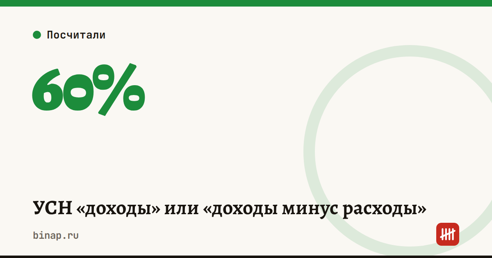

УСН «доходы» или «доходы минус расходы»

Есть простое правило: если расходы больше 60% доходов, «доходы минус расходы» обычно выгоднее. Но у правила есть три поправки, из-за которых его нужно проверять на своих цифрах, — и делать это до 31 декабря: сменить объект можно только с нового года.
Коротко
- При ставках 6% и 15% налог одинаковый, когда расходы составляют 60% доходов.
- На «доходах» налог уменьшают на страховые взносы — у ИП без сотрудников иногда до нуля.
- На «доходах минус расходы» есть минимальный налог 1% от доходов: его платят, если обычный налог меньше.
- Регионы могут снижать ставки: «доходы» — до 1%, «доходы минус расходы» — до 5%.
- Сменить объект можно с 1 января, уведомление подают до 31 декабря.
Сроки, изменения и разборы для ИП и самозанятых — каждое утро в Telegram и MAX. Подпишитесь, чтобы не пропустить.
Почему 60%
При 6% с доходов и 15% с разницы налог одинаковый, когда расходы составляют ровно 60% выручки. Пример: доход 1 млн ₽. На «доходах» налог 60 тыс. ₽. На «доходах минус расходы» при расходах 600 тыс. ₽ налог тоже 60 тыс. ₽: 15% от 400 тыс.
- УСН «доходы», 6%
- УСН «доходы минус расходы», 15%, но не меньше 1% дохода
Правее отметки 60% выгоднее «доходы минус расходы». Минимальный налог — 1% дохода.
Таблица с данными
| Доля расходов | «Доходы» 6% | «Доходы − расходы» 15% |
|---|---|---|
| 0% | 60 000 ₽ | 150 000 ₽ |
| 10% | 60 000 ₽ | 135 000 ₽ |
| 20% | 60 000 ₽ | 120 000 ₽ |
| 30% | 60 000 ₽ | 105 000 ₽ |
| 40% | 60 000 ₽ | 90 000 ₽ |
| 50% | 60 000 ₽ | 75 000 ₽ |
| 60% | 60 000 ₽ | 60 000 ₽ |
| 70% | 60 000 ₽ | 45 000 ₽ |
| 80% | 60 000 ₽ | 30 000 ₽ |
| 90% | 60 000 ₽ | 15 000 ₽ |
| 100% | 60 000 ₽ | 10 000 ₽ |
Три поправки
- Взносы. На «доходах» налог можно уменьшить на страховые взносы — у ИП без сотрудников иногда до нуля, у работодателя — не больше чем наполовину. На «доходах минус расходы» взносы просто входят в расходы.
- Региональные ставки. Где-то «доходы» — 1–4%, а «доходы минус расходы» — 5–10%. По данным «Ведомостей», правительство одобрило ко второму чтению поправку: в Налоговом кодексе появится перечень видов деятельности, для которых регионы могут снижать ставку. Проверьте свою ставку и вид деятельности на сайте ФНС.
- Подтверждение расходов. Расходы нужно подтверждать документами и оплатой. Нет чеков и актов — нет расходов, и выгода объекта исчезает.
Пример: ИП без сотрудников
Расчёт редакции для 2026 года. Доход 3 млн ₽, расходы 1,9 млн ₽ (63% доходов), ставки 6% и 15%, взносы ИП за себя — 57 390 ₽ фиксированные плюс 1% с дохода сверх 300 000 ₽: 27 000 ₽, всего 84 390 ₽.
| «Доходы» 6% | «Доходы минус расходы» 15% | |
|---|---|---|
| База | 3 000 000 ₽ | 3 000 000 − 1 900 000 − 84 390 = 1 015 610 ₽ |
| Налог до уменьшения | 180 000 ₽ | 152 342 ₽ |
| Уменьшение на взносы | −84 390 ₽ | — (взносы уже в расходах) |
| Налог к уплате | 95 610 ₽ | 152 342 ₽ |
Хотя расходы больше 60%, у ИП без сотрудников «доходы» выгоднее — на 56 732 ₽ в год, потому что взносы уменьшают налог целиком. Правило 60% лучше работает для компаний и ИП с работниками. Посчитайте свой вариант в калькуляторе УСН — он учитывает и взносы, и минимальный налог.
Что сделать до 31 декабря
- Посчитайте долю расходов за 2026 год по учёту, а не на глаз.
- Проверьте ставки своего региона для вашего вида деятельности.
- Прогоните оба объекта через калькулятор с взносами.
- Если меняете объект, подайте уведомление до 31 декабря — тогда новый объект действует с 1 января 2027 года.
- Проверьте порог по НДС: при доходе больше порога упрощенец становится плательщиком НДС независимо от объекта — подробно в статье порог НДС на УСН.
Частые вопросы
Можно ли сменить объект в середине года? Нет, только с 1 января следующего года, уведомив налоговую до 31 декабря.
Что такое минимальный налог? На «доходах минус расходы» налог не может быть меньше 1% от доходов: если обычный налог вышел меньше, платят 1%.
Что выгоднее для ИП без сотрудников? Часто «доходы»: взносы уменьшают налог целиком. Но при расходах выше 75–80% выгоднее может быть «доходы минус расходы» — посчитайте в калькуляторе.